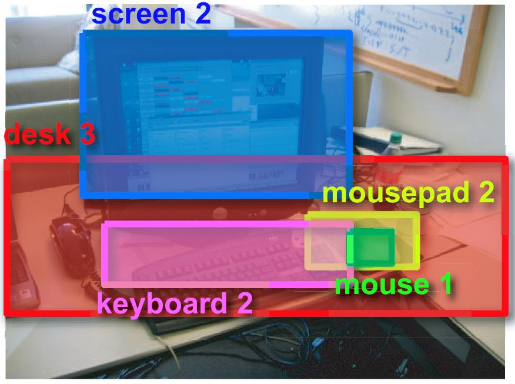

|
Bryan C. Russell
Address at the University of Washington: Computer Science and Engineering University of Washington Box 352350 Seattle, WA 98195-2350 Office: 444 Allen Center (directions) Phone: +1 206 616 0034 E-mail: bcr at cs.washington.edu |

|
I am a Research Scientist/Researcher-in-Residence as part of the Intel Science and Technology Center for Visual Computing (ISTC-VC). I also have a courtesy Affiliate Professor appointment in the Department of Computer Science & Engineering at the University of Washington.
Research: My research interests are primarily in computer vision. In particular, I am interested in visual scene understanding and object recognition. More recently, I am interested in (i) leveraging online text to automatically label 3D geometry, and (ii) cross-domain matching and alignment of historical architectural paintings to 3D models constructed from photographs.
Bio: I received my Ph.D. from MIT in the Computer Science and Artificial Intelligence Laboratory in 2008 under the supervision of Professors William T. Freeman and Antonio Torralba. I was a post-doctoral fellow from 2008-2010 in the INRIA Willow team at the Département d'Informatique of Ecole Normale Supérieure in Paris, France.
Selected projects
A complete list of my publications sorted by year, as a BibTeX file, and on Google scholar.
 |
3D Wikipedia: Using Online Text to Automatically Label and Navigate Reconstructed Geometry
Bryan C. Russell, Ricardo Martin-Brualla, Daniel J. Butler, Steven M. Seitz, and Luke Zettlemoyer ACM Transactions on Graphics (SIGGRAPH Asia 2013), Vol. 32, No. 6. |
 |
Localizing 3D Cuboids in Single-view Images
Jianxiong Xiao, Bryan C. Russell, and Antonio Torralba Advances in Neural Information Processing Systems (NIPS), 2012. |
|
Automatic Alignment of Paintings and Photographs Depicting a 3D Scene
Bryan C. Russell, Josef Sivic, Jean Ponce, and Hélène Dessales 3rd International IEEE Workshop on 3D Representation for Recognition (3dRR-11), associated with ICCV 2011. |
|
 |
Segmenting Scenes by Matching Image Composites
Bryan C. Russell, Alexei A. Efros, Josef Sivic, William T. Freeman, and Andrew Zisserman Advances in Neural Information Processing Systems (NIPS), 2009. |
 |
LabelMe video: Building a Video Database with Human Annotations
Jenny Yuen, Bryan C. Russell, Ce Liu, and Antonio Torralba IEEE International Conference on Computer Vision (ICCV), 2009. |
 |
LabelMe3D: Building a Database of 3D Scenes from User Annotations
Bryan C. Russell and Antonio Torralba IEEE Conference on Computer Vision and Pattern Recognition (CVPR), 2009. |
 |
LabelMe: A Database and Web-based Tool for Image Annotation
Bryan C. Russell, Antonio Torralba, Kevin P. Murphy, and William T. Freeman International Journal of Computer Vision, 77(1-3):157-173, 2008. |
|  |
Object Recognition by Scene Alignment
Bryan C. Russell, Antonio Torralba, Ce Liu, Rob Fergus, and William T. Freeman Advances in Neural Information Processing Systems (NIPS), 2007. |
 |
Using Multiple Segmentations to Discover Objects and their Extent in Image Collections
Bryan C. Russell, Alexei A. Efros, Josef Sivic, William T. Freeman, and Andrew Zisserman IEEE Conference on Computer Vision and Pattern Recognition (CVPR), 2006. |
|
Discovering Objects and their Location in Images
Josef Sivic, Bryan C. Russell, Alexei A. Efros, Andrew Zisserman, and William T. Freeman International Conference on Computer Vision (ICCV), 2005. |
Misc.
- CVPR 2013: Intel sponsored panel discussion on computational bottlenecks in computer vision
- Spring 2012: CSE 590V: Computer vision seminar
- Fall 2011: CSE 590V: Computer vision seminar